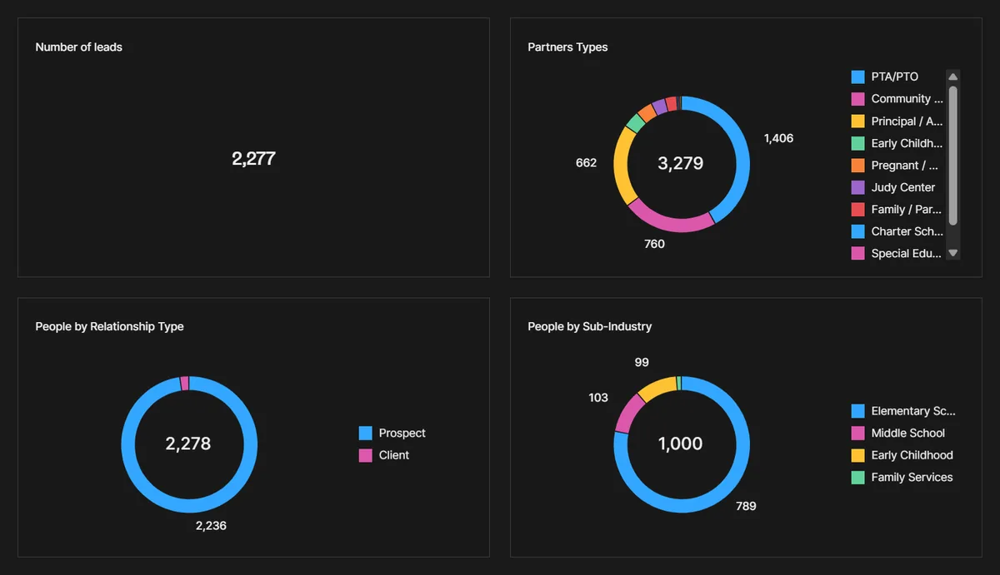

Live Folk dashboardSchool outreach CRM that booked 7–8 meetings from its first campaign
A Folk CRM and cold-email system to take the "Passport to Wellness" program to schools, principals and PTA/PTO groups, plus the training that lets a small team run it without me.
7–8 meetings booked from the first sequence wave. The winning email pulled a 14% reply rate, about 2.5× the other version.
★★★★★ "I didn't know how much I didn't realize was wrong with my system until working with him."Kim, Healthy Little Cooks · 5-star Fiverr review
Folk CRMEmail sequencesGoogle WorkspaceDashboardsSOPs & training
The problem
Healthy Little Cooks had a strong reputation and a good program, but outreach to schools lived in spreadsheets and inboxes. Nobody could see who had been contacted, who replied, or who was ready for a call, and follow-ups depended on someone remembering.
What I built
- A Folk workspace for 2,277 contacts with a 9-stage pipeline (Lead → To Contact → Contacted → Engaged → Call Scheduled → Follow-Up → Closed Won/Lost), a tag system (PTA/PTO, Title 1, Judy Center, Head Start, district and more) and saved views for each segment.
- Four A/B email sequences for schools and PTO/PTA groups, 4 emails each, spaced 4–5 days apart. They send from a separate, warmed-up cold domain so the main domain stays safe. Stop-on-reply is on, and recipient filters keep existing clients and district offices out.
- A live dashboard showing leads, pipeline stages, relationship type, sub-industry and partner types at a glance.
- A booking tracker and reconciliation SOP: a twice-weekly routine to log meetings, move contacts and take them out of sequences.
- A 35-page team guide with 30 annotated screenshots covering daily replies, the pipeline, adding contacts, running sequences and reading the numbers.
What changed
- 7–8 meetings booked from the first wave of sequences.
- School mail filters were auto-opening and auto-clicking every link, so opens and clicks were unreliable. I read the A/B test from replies instead. The "Family Engagement Programs" email won with a 14% reply rate, about 2.5× the other version.
- The team now runs outreach, replies and booking reconciliation inside one system, with a guide to answer their questions.
In the client's words
★★★★★ "We had a fantastic experience working with Damilare. Looking forward to continuing to work together for our ongoing projects. I didn't know how much I didn't realize was wrong with my system until working with him. It was a great overall experience."Kim, Healthy Little Cooks · 5-star Fiverr review
Tools
Folk CRMFolk sequencesGoogle WorkspaceExcel trackerSOP & training docs
Screens
Contact names and emails are blurred to protect the client's contacts.